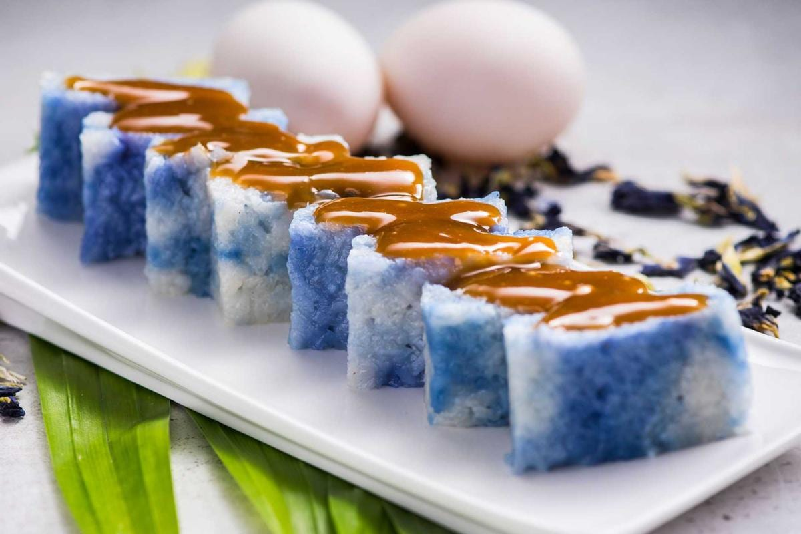

Pulut Tai-Tai Recipe

Description
Moist and flavorful glutinous rice is cooked in coconut milk and naturally colored
with butterfly pea flower water and then pressed into a cake pan and then serve with a rich and creamy sweeten coconut jam.
Ingredients
- 300g Glutinous Rice
- 200ml Thick Coconut Milk
- 100ml Water
- 1 tsp Salt
- 3 Pandan Leaf
- 1 Banana Leaf
- 5 pcs Blue Pea Flowers
Steps
- Cook the blue flowers to get a nice blue colour and let it cool down.
- Wash the glutinous rice and divide it into two bowls. Pour water into one bowl and pour butterfly pea flowers water into the other bowl. Soak overnight or at least 4 hours.
- Dry the soaked glutinous rice and place it in a large plate. Put pandan leaves and pour in the thick coconut milk mixed with salt.
- Put glutinous rice in a steamer and steam for 30 minutes, then simmer for 5 minutes. After that, take out the glutinous rice and stir well.
- Put the glutinous rice into the mould with banana leaves. Press it with a heavy object for at least 2 hours to make the glutinous rice cake firm. Slice it up and eat it.
Back to Home